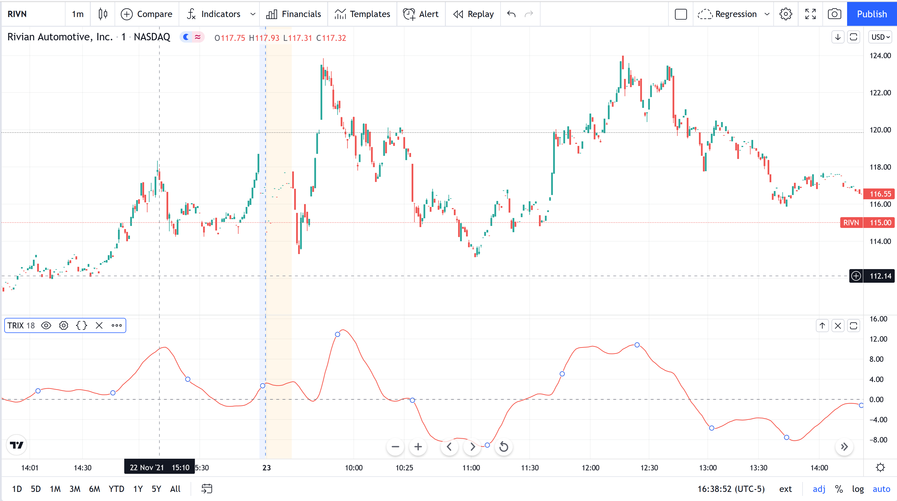

51 Trix
It is comprised of the rate of change of a triple exponentially smoothed moving average. The key signals generated by TRIX are divergences and signal line crossovers.
There are four components to the TRIX calculation:
Single Smoothed EMA = 18 Period EMA of Closing Price.
Double Smoothed EMA = 18 Period EMA of the Single Smoothed EMA.
Triple Smoothed EMA = 18 Period EMA of the Double Smoothed EMA.
TRIX = 1 Period Percent Change of Triple Smoothed EMA.
There is also typically a signal line which is an EMA of the TRIX line

Figure 7.67: Trix